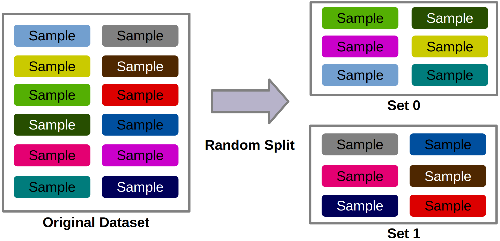

ML Applied to Data Drift Detection
In the last topics we saw how to use statistics to detect data drift in the data being predicted by the model.
Now, let's see how to apply ML to detect data drift in ML-predicted data.
Well, maybe all this ML has left us confused. So let's learn by example, calmly!
Churn Database
For the experiment, we will use simulated data and also the churn database presented in class 13-tracking/mlflow/.
A sample of the database:
| CreditScore | Geography | Gender | Age | Tenure | Balance | ... | Exited | |
|---|---|---|---|---|---|---|---|---|
| 1456 | 639 | Spain | Male | 28 | 8 | 0 | ... | 0 |
| 81 | 777 | France | Female | 32 | 2 | 0 | ... | 1 |
| 6383 | 594 | France | Male | 36 | 6 | 153880 | ... | 0 |
| 5774 | 706 | Germany | Male | 31 | 1 | 117020 | ... | 0 |
| 3105 | 678 | France | Female | 28 | 4 | 0 | ... | 1 |
So let's consider the following structure, containing the necessary files to work with:
Question 1
Experiment idea
Consider the tabular data from the churn database. In the image below, the original dataset on the left is composed of several samples/rows.
Question 2
Answer
Approximately 10 thousand rows and 11 columns.

The experiment will involve randomly selecting the rows from this dataset and separating them into two new sets: set 0 and set 1.
Question 3
Answer
Basically, there should be no significant differences (except some random effect), as the data were extracted randomly from the original database.
Remember the CLT (central limit theorem) seen in the second semester (data science). We are using 50% of the dataset that has thousands of elements, which should produce a good representation!
Question 4
Answer
No!
So, imagine that a Set column was created identifying whether the dataset row was drawn into set one or set 2:
| CreditScore | Geography | Gender | Age | Tenure | ... | Set | |
|---|---|---|---|---|---|---|---|
| 1456 | 639 | Spain | Male | 28 | 8 | ... | 1 |
| 81 | 777 | France | Female | 32 | 2 | ... | 0 |
| 6383 | 594 | France | Male | 36 | 6 | ... | 0 |
| 5774 | 706 | Germany | Male | 31 | 1 | ... | 1 |
| 3105 | 678 | France | Female | 28 | 4 | ... | 0 |
Now, if a classification model is built (for example, Random Forest) that uses the Set variable as target and the other columns as features.
Question 5
Answer!
As the data were drawn randomly and we have already discussed that they have the same distribution as the original data, it should not be possible to distinguish them.
The data has the same distribution!
Trying!
Let's carry out this experiment in Python to really see what happens!
Info!
Fill in these source codes in the file src/data_drift.py.
Import the libraries:
import pandas as pd
import random
import matplotlib.pyplot as plt
from sklearn.utils import resample
from sklearn.model_selection import train_test_split
from sklearn.ensemble import RandomForestClassifier
from sklearn.compose import make_column_transformer
from sklearn.preprocessing import OneHotEncoder, StandardScaler
from sklearn.metrics import (
accuracy_score,
confusion_matrix,
ConfusionMatrixDisplay,
)
Construct the functions to balance (although we could skip this step) and preprocess the data.
Source code for rebalance and preprocess
def rebalance(data):
"""
Resample data to keep balance between target classes.
The function uses the resample function to downsample the minority class to match the majority class.
Args:
data (pd.DataFrame): DataFrame
Returns:
pd.DataFrame): balanced DataFrame
"""
churn_0 = data[data["Exited"] == 0]
churn_1 = data[data["Exited"] == 1]
if len(churn_0) > len(churn_1):
churn_maj = churn_0
churn_min = churn_1
else:
churn_maj = churn_1
churn_min = churn_0
churn_maj_downsample = resample(
churn_maj, n_samples=len(churn_min), replace=False, random_state=1234
)
return pd.concat([churn_maj_downsample, churn_min])
def preprocess(df):
"""
Preprocess and split data into training and test sets.
Args:
df (pd.DataFrame): DataFrame with features and target variables
Returns:
ColumnTransformer: ColumnTransformer with scalers and encoders
pd.DataFrame: training set with transformed features
pd.DataFrame: test set with transformed features
pd.Series: training set target
pd.Series: test set target
"""
filter_feat = [
"CreditScore",
"Geography",
"Gender",
"Age",
"Tenure",
"Balance",
"NumOfProducts",
"HasCrCard",
"IsActiveMember",
"EstimatedSalary",
"Exited",
]
data = df.loc[:, filter_feat]
data_bal = rebalance(data=data)
# shuffle and return
return data_bal.sample(frac=1, random_state=42)
Open the dataset:
df = pd.read_csv("data/Churn_Modelling.csv")
df_bal = preprocess(df)
print(df_bal.shape)
df_bal.head()
Randomly distribute the dataset rows between the sets set 0 and set 1.
Separate data between features and target:
Create the training and testing set:
Prepare the data:
cat_cols = ["Geography", "Gender"]
num_cols = [
"CreditScore",
"Age",
"Tenure",
"Balance",
"NumOfProducts",
"HasCrCard",
"IsActiveMember",
"EstimatedSalary",
]
col_transf = make_column_transformer(
(StandardScaler(), num_cols),
(OneHotEncoder(handle_unknown="ignore", drop="first"), cat_cols),
remainder="passthrough",
)
X_train = col_transf.fit_transform(X_train)
X_train = pd.DataFrame(X_train, columns=col_transf.get_feature_names_out())
X_test = col_transf.transform(X_test)
X_test = pd.DataFrame(X_test, columns=col_transf.get_feature_names_out())
Create and Train the model:
clf = RandomForestClassifier(n_estimators=100, max_depth=5, random_state=42)
clf.fit(X_train, y_train)
Check accuracy:
Confusion matrix:
conf_mat = confusion_matrix(y_test, y_pred, labels=clf.classes_)
conf_mat_disp = ConfusionMatrixDisplay(
confusion_matrix=conf_mat, display_labels=clf.classes_
)
conf_mat_disp.plot()
You should see performance close to 50%, indicating that there is no evidence of data drift in the data.
Application
Let's extend this concept and try to understand its real application. Imagine that now we have two sets of data captured at different moments in time (Set January and Set April), with a separation of a few months between them.
What would happen if we repeated the experiment? Now trying to create a classifier that predicts whether the data was captured in January or April.
Question 6
Answer!
The data has (approximately) the same distribution!
Question 7
Answer!
Now the model begins to have clues (evidence in the distribution of features) to be able to predict the origin of the lines with more certainty.
So an increase in the accuracy of this model indicates the presence of little or a lot of data drift.
Question 8
Answer
Unfortunately there is no general answer! It will depend on the application area and other monitoring metrics, such as business metrics.
Simulate that!
Let's create a model based on just one feature, simulate data drift on this feature and check if we can identify the occurrence of data drift with ML (Random Forest, but you can test with other models).
Let's generate the data for the dataset for January and April.
New file!
Paste the following code to a new file: src/data_drift_sim.py.
import numpy as np
import pandas as pd
import matplotlib.pyplot as plt
from sklearn.model_selection import train_test_split
from sklearn.ensemble import RandomForestClassifier
from sklearn.metrics import (
accuracy_score,
confusion_matrix,
ConfusionMatrixDisplay,
)
#Set distributions
avg_january = 0.0
std_january = 1.0
avg_april = 0.0
std_april = 1.0
# Generate data from two distributions
np.random.seed(1234)
data_jan = np.random.normal(loc=avg_january, scale=std_january, size=1000)
data_apr = np.random.normal(loc=avg_april, scale=std_april, size=1000)
# Plot histograms of the two distributions
plt.hist(data_jan, bins=30, alpha=0.5, label="Data January")
plt.hist(data_apr, bins=30, alpha=0.5, label="Data April")
plt.xlabel("Feature Value")
plt.ylabel("Frequency")
plt.title("Histogram of Data train and Data production")
plt.legend()
plt.savefig("ks_test_ex.png")
plt.show()
Now we transform to DataFrame:
df_jan = pd.DataFrame({"feature": data_jan, "set": [0] * len(data_jan)})
df_jan.head()
df_apr = pd.DataFrame({"feature": data_apr, "set": [1] * len(data_jan)})
df_apr.head()
# Concatenate DataFrames
df_sim = pd.concat([df_jan, df_apr], axis=0)
df_sim
Let's generate the training and testing data:
X = df_sim.drop("set", axis=1)
y = df_sim["set"]
X_train, X_test, y_train, y_test = train_test_split(
X, y, test_size=0.3, random_state=1912
)
Train the classifier:
clf = RandomForestClassifier(n_estimators=100, max_depth=5, random_state=42)
clf.fit(X_train, y_train)
And check it's performance:
y_pred = clf.predict(X_test)
print(f"Accuracy score: {accuracy_score(y_test, y_pred):.2f}")
conf_mat = confusion_matrix(y_test, y_pred, labels=clf.classes_)
conf_mat_disp = ConfusionMatrixDisplay(
confusion_matrix=conf_mat, display_labels=clf.classes_
)
conf_mat_disp.plot()
Question 9
Question 10
And in this way, we saw how to use ML to identify the presence of data drift in datasets used in ML!
{kind=link}